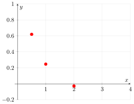
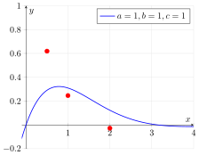
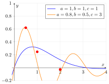
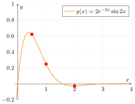
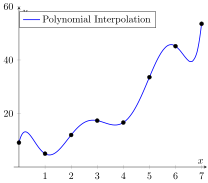
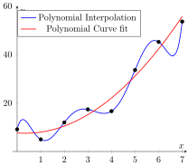
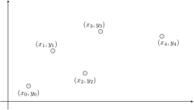
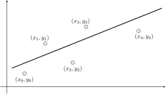
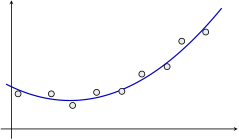

E21 Computer Engineering Fundamentals
November 12, 2026
Fitting a polynomial of degree \(n\) to a set of \(n+1\) points is an example of linear interpolation.
Interpolate the polynomial \[y = a_0 + a_1 x + a_2 x^2 + ... a_n x^n \] to the points \(\{ x_0, y_0 \}, \{ x_1, y_1 \}, \{ x_2, y_2 \}, ... , \{ x_n, y_n \}\) by solving an equation for the parameters \(\{ a_0, a_1, a_2, ..., a_n \}\)
\[ {\begin{bmatrix} x_0^0 & x_0^1 & x_0^2 & \cdots & x_0^n \\ x_1^0 & x_1^1 & x_1^2 & \cdots & x_1^n \\ \vdots & \vdots & \vdots & \ddots & \vdots \\ x_n^0 & x_n^1 & x_n^2 & \cdots & x_n^n \end{bmatrix}} \begin{bmatrix} a_0 \\ a_1 \\ \vdots \\ a_n \end{bmatrix} = \begin{bmatrix} y_0 \\ y_1 \\ \vdots \\ y_n \end{bmatrix} \]
What’s nonlinear interpolation ?
Interpolate the points \(\{ 0.5, 0.6191\}, \{ 1, 0.24612\}, \{ 2, -0.0277\}\) to the curve \(\boxed{y(x) = a e^{-b x} \sin (c x)}\).



Write down the mathematical equations for this problem.
Interpolating \(\{ 0.5, 0.6191\}, \{ 1.0, 0.24612\}, \{ 2.0, -0.0277\}\) to \(\boxed{y(x) = a e^{-b x} \sin (c x)}\)
requires solving three equations for three unknowns
\[ \begin{align*} \phantom{-}0.6191 &= a e^{-b \times 0.5} \sin (c \times 0.5) \\ \phantom{-}0.2461 &= a e^{-b \times 1.0} \sin (c \times 1.0) \\ -0.0277 &= a e^{-b \times 2.0} \sin (c \times 2.0) \end{align*} \]
Notice that the interpolating function \(y(x)\) depends nonlinearly on the parameters \(b\) and \(c\).
i.e., an equation of this kind does not exist:
\[ {\begin{bmatrix} A_{11} & A_{12} & A_{13} \\ A_{21} & A_{22} & A_{23} \\ A_{31} & A_{32} & A_{33} \end{bmatrix}} \begin{bmatrix} a \\ b \\ c \end{bmatrix} = \begin{bmatrix} d_1 \\ d_2 \\ d_3 \end{bmatrix} \]

Consider the following data points and make




Goal: Find a straight line that is as close as possible to the data points
Goal: Find \(f(x) = a_0 + a_1 x\) such that \(\sum r_i^2\) is minimized.
“Minimize the sum of the squares of the residuals”
Which of these is linear in the parameters \(a_i\) and which is nonlinear in the parameters \(a_i\) ?
Find the parameters \(\{ a_0, a_1, a_2, ..., a_m \}\) that minimize the so-called objective function \(\boxed{S = \sum_{i} [y_i - f(x_i)]^2}\),
where \(f(x) = a_0 + a_1 x + a_2 x^2 + ... + a_m x^m\)
Note: the summation symbol refers to ‘sum over all \(n\) points’
Minimize \(\displaystyle S = \sum [y_i - f(x_i)]^2\) with respect to \(a_0, a_1, a_2, ... a_m\)
\(\displaystyle S=\sum [y_i - a_0 - a_1 x_i - a_2 x_i^2 - ... - a_m x_i^m]^2\)
Idea: Take derivatives with respect to \(a_0\), \(a_1\), etc. and set them all to zero

Take derivatives \(\frac{\partial S}{\partial a_0}\), \(\frac{\partial S}{\partial a_1}\) and \(\frac{\partial S}{\partial a_2}\) and set equal to zero.
\[ \begin{aligned} \sum_{i} \left( {\color{red}{a_0}}{\color{green}{x_i^0}} + {\color{red}{a_1}}{\color{green}{x_i^1}} + {\color{red}{a_2}}{\color{green}{x_i^2}} \right) &= \sum_{i} {\color{green}{y_i}}{\color{green}{x_i^0}} \\ \sum_{i} \left( {\color{red}{a_0}}{\color{green}{x_i^1}} + {\color{red}{a_1}}{\color{green}{x_i^2}} + {\color{red}{a_2}}{\color{green}{x_i^3}} \right) &= \sum_{i} {\color{green}{y_i}}{\color{green}{x_i^1}} \\ \sum_{i} \left( {\color{red}{a_0}}{\color{green}{x_i^2}} + {\color{red}{a_1}}{\color{green}{x_i^3}} + {\color{red}{a_2}}{\color{green}{x_i^4}} \right) &= \sum_{i} {\color{green}{y_i}}{\color{green}{x_i^2}} \end{aligned} \]
\[ \begin{bmatrix} \sum x_i^0 & \sum x_i^1 & \sum x_i^2 \\ \sum x_i^1 & \sum x_i^2 & \sum x_i^3 \\ \sum x_i^2 & \sum x_i^3 & \sum x_i^4 \end{bmatrix} \begin{bmatrix} a_0 \\ a_1 \\ a_2 \end{bmatrix} = \begin{bmatrix} \sum y_i x_i^0 \\ \sum y_i x_i^1 \\ \sum y_i x_i^2 \end{bmatrix} \]
\[ \begin{bmatrix} \sum x_i^0 & \sum x_i^1 & \sum x_i^2 & \cdots & \sum x_i^m \\ \sum x_i^1 & \sum x_i^2 & \sum x_i^3 & \cdots & \sum x_i^{m+1} \\ \sum x_i^2 & \sum x_i^3 & \sum x_i^4 & \cdots & \sum x_i^{m+2} \\ \vdots & \vdots & \vdots & \ddots & \vdots \\ \sum x_i^m & \sum x_i^{m+1} & \sum x_i^{m+2} & \cdots & \sum x_i^{m+m} \end{bmatrix} \begin{bmatrix} a_0 \\ a_1 \\ a_2 \\ \vdots \\ a_m \end{bmatrix} = \begin{bmatrix} \sum x_i^0 y_i \\ \sum x_i^1 y_i \\ \sum x_i^2 y_i \\ \vdots \\ \sum x_i^m y_i \end{bmatrix} \]
Note: all sums are carried out over the \(n\) data points.
E21 • Fall 2026 • Lecture 20 • November 12, 2026 • ↩︎